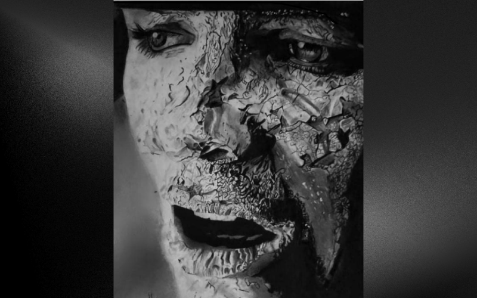
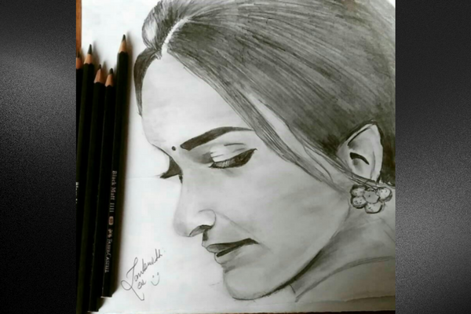
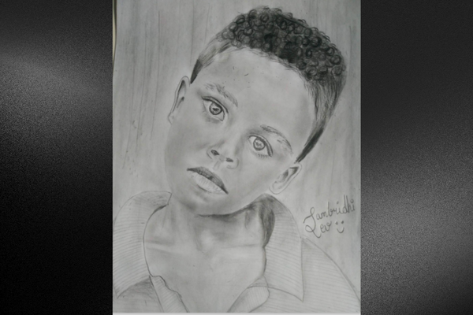
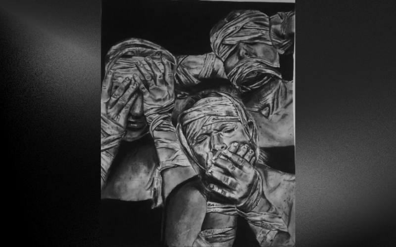
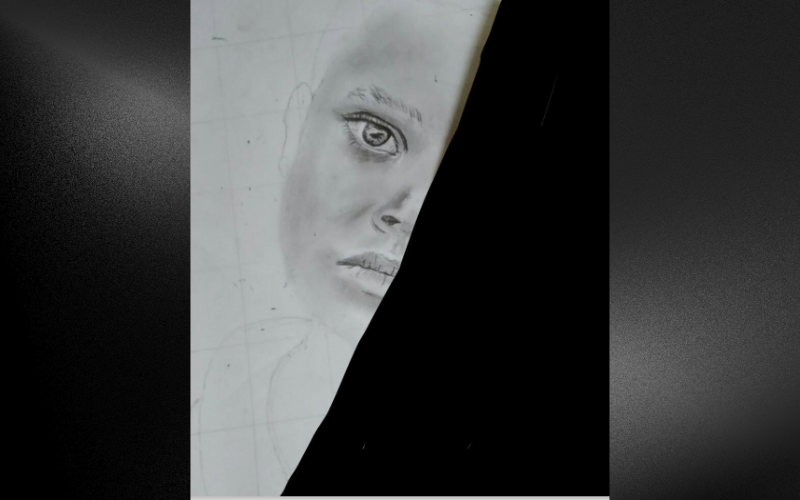
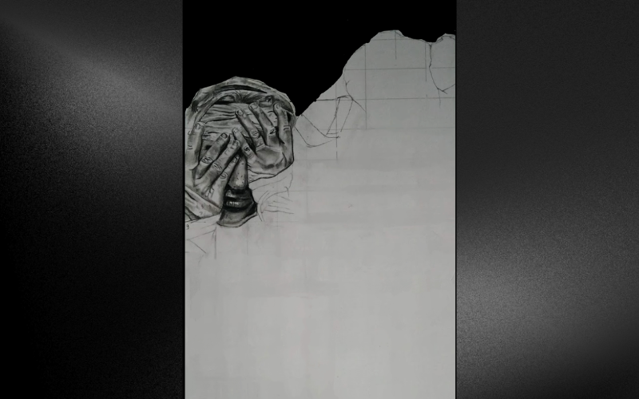

PENCIL · PAPER · PATIENCE
I also draw.
Sketches are how I slow down and pay attention: to a face, a feeling, a tiny line that wants to keep going.
A little more about me ↗✳

Cracks of the elegancePencil on paper · Time spent: not recorded

A girlPencil on paper · Time spent: not recorded

Stories inside EyesPencil on paper · Time spent: not recorded

I can’t speak; I can’t see; I can’t hearPencil on paper · Time spent: not recorded

Eye speaksPencil on paper · In progress · Time spent: not recorded

IncompletePencil on paper · In progress · Time spent: not recorded
The sketchbook is always open. · Return to the path ↗